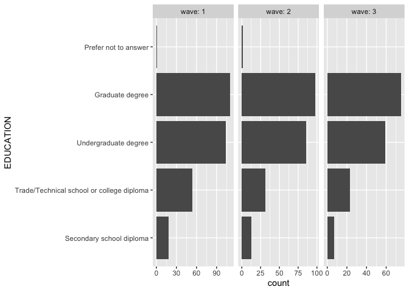
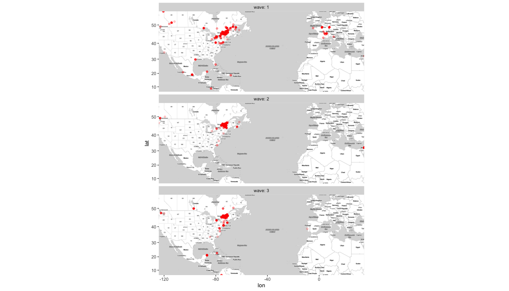
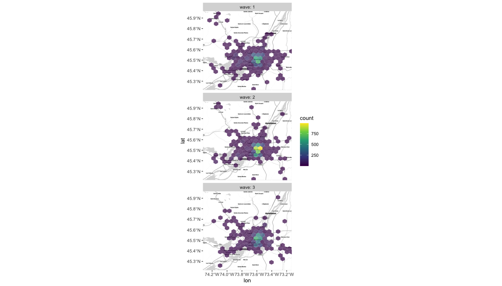
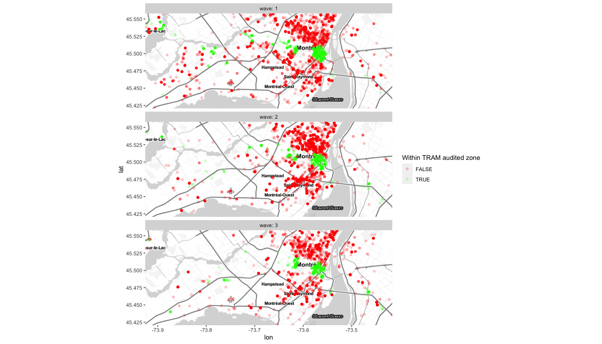
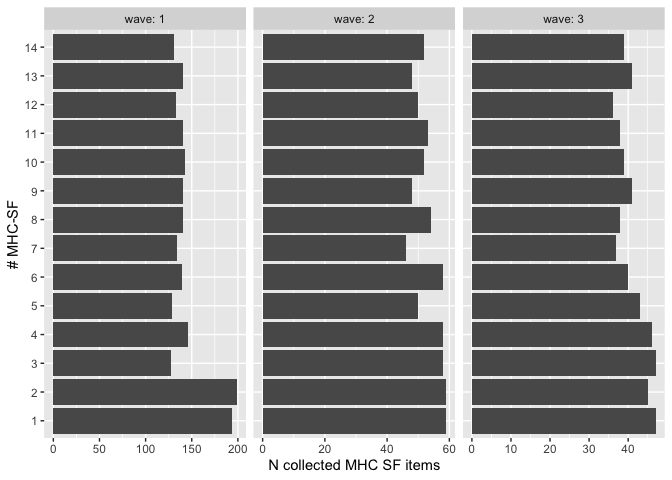
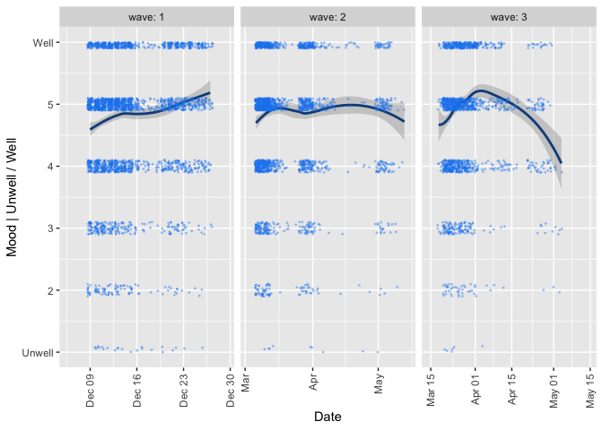
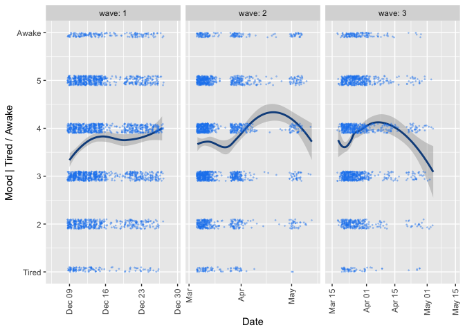
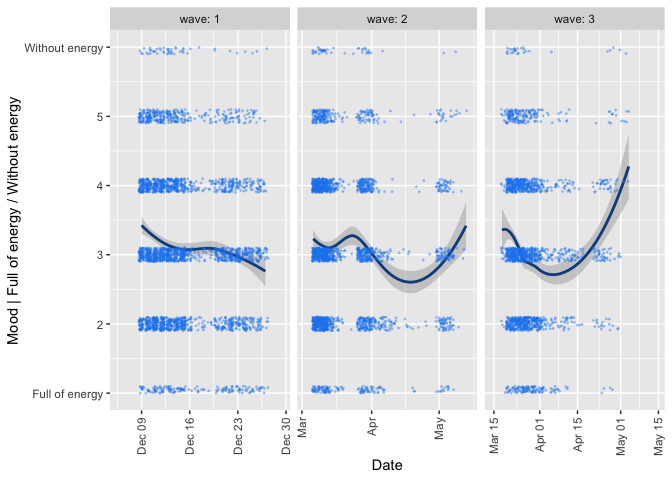
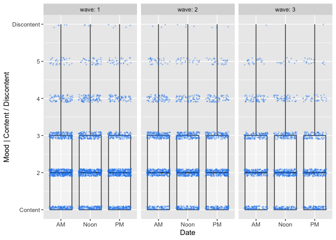
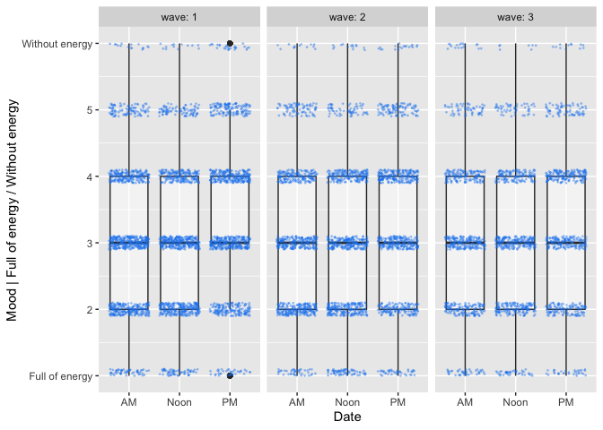

NB Each wave is loaded in the database thanks to dedicated scripts (see in each wave data folder for details)
SELECT tram.uniqueid AS tram_id,
ema.user_id AS ethica_id,
device_id,
1 AS wave,
scheduled_time AT TIME ZONE 'America/Montreal' AS scheduled_time,
issued_time AT TIME ZONE 'America/Montreal' AS issued_time,
response_time AT TIME ZONE 'America/Montreal' AS response_time,
round(extract(epoch from response_time - issued_time)) = 7200 AS is_expired,
duration_minutes,
lat,
lon,
language,
NULLIF(mhc_sf_1, -7) AS mhc_sf_1,
NULLIF(mhc_sf_2, -7) AS mhc_sf_2,
NULLIF(mhc_sf_3, -7) AS mhc_sf_3,
NULLIF(mhc_sf_4, -7) AS mhc_sf_4,
NULLIF(mhc_sf_5, -7) AS mhc_sf_5,
NULLIF(mhc_sf_6, -7) AS mhc_sf_6,
NULLIF(mhc_sf_7, -7) AS mhc_sf_7,
NULLIF(mhc_sf_8, -7) AS mhc_sf_8,
NULLIF(mhc_sf_9, -7) AS mhc_sf_9,
NULLIF(mhc_sf_10, -7) AS mhc_sf_10,
NULLIF(mhc_sf_11, -7) AS mhc_sf_11,
NULLIF(mhc_sf_12, -7) AS mhc_sf_12,
NULLIF(mhc_sf_13, -7) AS mhc_sf_13,
NULLIF(mhc_sf_14, -7) AS mhc_sf_14,
NULLIF(mood_a, -7) AS mood_a,
NULLIF(mood_b, -7) AS mood_b,
NULLIF(mood_c, -7) AS mood_c,
NULLIF(mood_d, -7) AS mood_d,
NULLIF(mood_e, -7) AS mood_e,
NULLIF(mood_f, -7) AS mood_f,
mood_who,
NULLIF(transp_mode, -7) AS transp_mode,
NULLIF(motiv, '-7') AS motiv,
feedback_ema_1 AS ema_fdbk_more,
feedback_ema_2 AS ema_fdbk_easy,
feedback_ema_3 AS ema_fdbk_too_many,
feedback_ema_4 AS ema_fdbk_too_freq,
feedback_ema_5 AS ema_fdbk_freq_ok,
feedback_ema_6 AS ema_fdbk_like,
feedback_ema_7 AS ema_fdbk_not_know,
feedback_ema_8 AS ema_fdbk_too_pers,
feedback_ema_9 AS ema_fdbk_more_quest,
feedback_gen,
feedback_gen_1 AS study_fdbk_like,
feedback_gen_2 AS study_fdbk_stop,
feedback_gen_3 AS study_fdbk_not_like,
feedback_gen_4 AS study_fdbk_too_many_qst,
feedback_gen_5 AS study_fdbk_too_many_msg,
feedback_gen_6 AS study_fdbk_interest,
feedback_gen_7 AS study_fdbk_results
FROM rem.tram_lut_w1 tram
JOIN rem.ema ON ema.user_id = tram."Name"# Wave 1
REM1.ema <- .rem_ema1 %>%
mutate(duration_minutes = case_when(is_expired ~ Inf,
TRUE ~ as.double(duration_minutes)/60)) %>% # duration_minutes is actually expressed in seconds !!
select(!is_expired)
REM1.survey <- read_csv("wave1/data/w1.FINAL_WEIGHTED_24May22 - Copy.csv", show_col_types = FALSE) %>%
rename(tram_id = uniqueID) %>%
semi_join(REM1.ema, by = 'tram_id')
# Display excerpt
head(REM1.ema)SELECT vpl."W1uniqueID" AS tram_id,
tr.uniqueid AS tram_id_w2,
ema."Name"::int AS ethica_id,
"Device ID" AS device_id,
2 AS wave,
("Scheduled Time"::timestamp with time zone) at time zone 'America/Montreal' AS scheduled_time,
("Issued Time"::timestamp with time zone) at time zone 'America/Montreal' AS issued_time,
("Response Time"::timestamp with time zone) at time zone 'America/Montreal' AS response_time,
"Duration (seconds) from scheduled to completion time" AS duration_minutes,
"Location",
mhc_sf_1,
mhc_sf_2,
mhc_sf_3,
mhc_sf_4,
mhc_sf_5,
mhc_sf_6,
mhc_sf_7,
mhc_sf_8,
mhc_sf_9,
mhc_sf_10,
mhc_sf_11,
mhc_sf_12,
mhc_sf_13,
mhc_sf_14,
NULLIF("[1_SAQ] At this moment I feel:", -7) AS mood_a,
NULLIF("[2_SAQ] At this moment I feel:", -7) AS mood_b,
NULLIF("[3_SAQ] At this moment I feel:", -7) AS mood_c,
NULLIF("[4_SAQ] At this moment I feel:", -7) AS mood_d,
NULLIF("[5_SAQ] At this moment I feel:", -7) AS mood_e,
NULLIF("[6_SAQ] At this moment I feel:", -7) AS mood_f,
"[7_SAQ] At this moment I am interacting with:" AS mood_who,
NULLIF("[1_SAQ] What was the mode of transportation for your first", -7) AS transp_mode,
"[1_FFT] Just a reminder that since tomorrow is the final d" AS motiv,
"[1_MAQ_1] I would have liked to answer these questions more" AS ema_fdbk_more,
"[1_MAQ_2] The questions were easy" AS ema_fdbk_easy,
"[1_MAQ_3] There were too many questions at a time" AS ema_fdbk_too_many,
"[1_MAQ_4] The questions were too frequent" AS ema_fdbk_too_freq,
"[1_MAQ_5] The frequency of the questions was good" AS ema_fdbk_freq_ok,
"[1_MAQ_6] I liked these questions" AS ema_fdbk_like,
"[1_MAQ_7] I didn't know how to answer" AS ema_fdbk_not_know,
"[1_MAQ_8] The questions were too personal" AS ema_fdbk_too_pers,
"[1_MAQ_9] I woud have liked to answer more questions" AS ema_fdbk_more_quest,
"[1_MAQ_1] I'm liking these questions" AS study_fdbk_like,
"[1_MAQ_2] I'm looking forward to the end of the study!" AS study_fdbk_stop,
"[1_MAQ_3] I don't like answering these questions" AS study_fdbk_not_like,
"[1_MAQ_4] There are too many questions" AS study_fdbk_too_many_qst,
"[1_MAQ_5] There are too many messages" AS study_fdbk_too_many_msg,
"[1_MAQ_6] The questions are interesting" AS study_fdbk_interest,
"[1_MAQ_7] I'm looking forward to seeing the results!" AS study_fdbk_results
FROM rem2.tram_registration_w2 tr
JOIN rem2.ethica_registration_w2 er ON upper(trim(er.email)) = upper(trim(tr.email))
JOIN rem2.ema ema ON ema."Name" = er.ethica_id
LEFT JOIN rem2.valid_panel_lut vpl ON tr.uniqueid = vpl."W2uniqueID"# Wave 2
REM2.ema <- .rem_ema2 %>%
mutate(#tram_id = case_when(str_detect(tram_id_w2, "_W1_") ~ paste0("MCG", str_extract(tram_id_w2, "[0-9]*$")),
# TRUE ~ tram_id_w2),
duration_minutes = case_when(duration_minutes == "Expired" ~ Inf,
duration_minutes == "Canceled" ~ NA_real_,
TRUE ~ as.double(duration_minutes)/60), # duration_minutes is actually expressed in seconds !!
lat = as.double(word(Location, start=1)),
lon = as.double(word(Location, start=2))) %>%
select(!Location)
REM2.survey <- read_csv("wave2/data/w2.FINAL_COMPLETE_9May22.csv", show_col_types = FALSE) %>%
rename(tram_id_w2 = uniqueID) %>%
semi_join(REM2.ema, by = 'tram_id_w2')
# Display excerpt
head(REM2.ema)SELECT tr.uniqueid_w1 AS tram_id,
tr.uniqueid_w2 AS tram_id_w2,
tr.uniqueid_w3 AS tram_id_w3,
ema."Name"::int AS ethica_id,
"Device ID" AS device_id,
3 AS wave,
("Scheduled Time"::timestamp with time zone) at time zone 'America/Montreal' AS scheduled_time,
("Issued Time"::timestamp with time zone) at time zone 'America/Montreal' AS issued_time,
("Response Time"::timestamp with time zone) at time zone 'America/Montreal' AS response_time,
"Duration (seconds) from scheduled to completion time" AS duration_minutes,
"Location",
mhc_sf_1,
mhc_sf_2,
mhc_sf_3,
mhc_sf_4,
mhc_sf_5,
mhc_sf_6,
mhc_sf_7,
mhc_sf_8,
mhc_sf_9,
mhc_sf_10,
mhc_sf_11,
mhc_sf_12,
mhc_sf_13,
mhc_sf_14,
NULLIF("[1_SAQ] At this moment I feel:", -7) AS mood_a,
NULLIF("[2_SAQ] At this moment I feel:", -7) AS mood_b,
NULLIF("[3_SAQ] At this moment I feel:", -7) AS mood_c,
NULLIF("[4_SAQ] At this moment I feel:", -7) AS mood_d,
NULLIF("[5_SAQ] At this moment I feel:", -7) AS mood_e,
NULLIF("[6_SAQ] At this moment I feel:", -7) AS mood_f,
"[7_SAQ] At this moment I am interacting with:" AS mood_who,
NULLIF("[1_SAQ] What was the mode of transportation for your first", -7) AS transp_mode,
"[1_FFT] Just a reminder that since tomorrow is the final d" AS motiv,
"[1_MAQ_1] I would have liked to answer these questions more" AS ema_fdbk_more,
"[1_MAQ_2] The questions were easy" AS ema_fdbk_easy,
"[1_MAQ_3] There were too many questions at a time" AS ema_fdbk_too_many,
"[1_MAQ_4] The questions were too frequent" AS ema_fdbk_too_freq,
"[1_MAQ_5] The frequency of the questions was good" AS ema_fdbk_freq_ok,
"[1_MAQ_6] I liked these questions" AS ema_fdbk_like,
"[1_MAQ_7] I didn't know how to answer" AS ema_fdbk_not_know,
"[1_MAQ_8] The questions were too personal" AS ema_fdbk_too_pers,
"[1_MAQ_9] I woud have liked to answer more questions" AS ema_fdbk_more_quest,
"[1_MAQ_1] I'm liking these questions" AS study_fdbk_like,
"[1_MAQ_2] I'm looking forward to the end of the study!" AS study_fdbk_stop,
"[1_MAQ_3] I don't like answering these questions" AS study_fdbk_not_like,
"[1_MAQ_4] There are too many questions" AS study_fdbk_too_many_qst,
"[1_MAQ_5] There are too many messages" AS study_fdbk_too_many_msg,
"[1_MAQ_6] The questions are interesting" AS study_fdbk_interest,
"[1_MAQ_7] I'm looking forward to seeing the results!" AS study_fdbk_results
FROM rem3.tram_registration_w3 tr
JOIN rem3.ethica_registration_w3 er ON upper(trim(er.email)) = upper(trim(tr.email_w3))
JOIN rem3.ema ema ON ema."Name" = er.ethica_id# Wave 3
REM3.ema <- .rem_ema3 %>%
mutate(duration_minutes = case_when(duration_minutes == "Expired" ~ Inf,
duration_minutes == "Canceled" ~ NA_real_,
TRUE ~ as.double(duration_minutes)/60), # duration_minutes is actually expressed in seconds !!
lat = as.double(word(Location, start=1)),
lon = as.double(word(Location, start=2))) %>%
select(!Location)
REM3.survey <- read_excel("wave3/data/w3.full_cleaned_29Jun23.xlsx") %>%
select(!`...1`) %>%
mutate(yrborn = as.numeric(yrborn),
approx_age = year(submitdate) - yrborn) %>%
rename(tram_id_w3 = uniqueID) %>%
semi_join(REM3.ema, by = 'tram_id_w3')## New names:
## • `` -> `...1`# Display excerpt
head(REM3.ema)# Merge bath datasets and recategorize
REM.ema <- bind_rows(REM1.ema, REM2.ema, REM3.ema) %>%
mutate(mhc_sf_1 = factor(mhc_sf_1, 1:6, c("Never","Rarely","Sometimes","Often","Most of the time","All the time")),
mhc_sf_2 = factor(mhc_sf_2, 1:6, c("Never","Rarely","Sometimes","Often","Most of the time","All the time")),
mhc_sf_3 = factor(mhc_sf_3, 1:6, c("Never","Rarely","Sometimes","Often","Most of the time","All the time")),
mhc_sf_4 = factor(mhc_sf_4, 1:6, c("Never","Rarely","Sometimes","Often","Most of the time","All the time")),
mhc_sf_5 = factor(mhc_sf_5, 1:6, c("Never","Rarely","Sometimes","Often","Most of the time","All the time")),
mhc_sf_6 = factor(mhc_sf_6, 1:6, c("Never","Rarely","Sometimes","Often","Most of the time","All the time")),
mhc_sf_7 = factor(mhc_sf_7, 1:6, c("Never","Rarely","Sometimes","Often","Most of the time","All the time")),
mhc_sf_8 = factor(mhc_sf_8, 1:6, c("Never","Rarely","Sometimes","Often","Most of the time","All the time")),
mhc_sf_9 = factor(mhc_sf_9, 1:6, c("Never","Rarely","Sometimes","Often","Most of the time","All the time")),
mhc_sf_10 = factor(mhc_sf_10, 1:6, c("Never","Rarely","Sometimes","Often","Most of the time","All the time")),
mhc_sf_11 = factor(mhc_sf_11, 1:6, c("Never","Rarely","Sometimes","Often","Most of the time","All the time")),
mhc_sf_12 = factor(mhc_sf_12, 1:6, c("Never","Rarely","Sometimes","Often","Most of the time","All the time")),
mhc_sf_13 = factor(mhc_sf_13, 1:6, c("Never","Rarely","Sometimes","Often","Most of the time","All the time")),
mhc_sf_14 = factor(mhc_sf_14, 1:6, c("Never","Rarely","Sometimes","Often","Most of the time","All the time")),
transp_mode = factor(transp_mode, 1:7, c("Walk","Car / Truck","Metro","Train","Metro","Bus","Other"))) %>%
mutate(mood_a = factor(mood_a, 1:6, c("Unwell", 2:5, "Well")),
mood_b = factor(mood_b, 1:6, c("Content", 2:5, "Discontent")),
mood_c = factor(mood_c, 1:6, c("Agitated", 2:5, "Calm")),
mood_d = factor(mood_d, 1:6, c("Relaxed", 2:5, "Tense")),
mood_e = factor(mood_e, 1:6, c("Tired", 2:5, "Awake")),
mood_f = factor(mood_f, 1:6, c("Full of energy", 2:5, "Without energy")),
mood_who = factor(mood_who, 1:5, c("No one, I am alone","No one, but there are people around me","Friend(s)","Family member(s) / spouse / partner","Colleague(s)")))
REM.ema <- st_as_sf(REM.ema, coords = c("lon", "lat"), crs = 4326, na.fail = F, remove = F)Participants got a different ID for each wave, need to build the panel LUT
# Reading the w1/w2 LUT
.tram_lut_w1.2 <- REM2.ema %>%
select(starts_with("tram_id")) %>%
unique()
# and the w3 participants
.tram_lut_w1.2.3 <- REM3.ema %>%
select(starts_with("tram_id")) %>%
unique()
# Creating the complete LUT w1/2/3 with no redundancy
tram_lut_w1.2.3 <- .tram_lut_w1.2 %>%
left_join(select(.tram_lut_w1.2.3, !tram_id_w2), by="tram_id", na_matches = "never") %>%
left_join(select(.tram_lut_w1.2.3, !tram_id), by="tram_id_w2", na_matches = "never") %>%
mutate(tram_id_w3 = coalesce(tram_id_w3.x, tram_id_w3.y)) %>%
select(!c(tram_id_w3.x, tram_id_w3.y))
# Populating the w1/2/3 IDs back into the EMA
REM.ema <- REM.ema %>%
left_join(tram_lut_w1.2.3, by="tram_id", suffix = c("", ".lut1"), na_matches = "never") %>%
left_join(tram_lut_w1.2.3, by="tram_id_w2", suffix = c("", ".lut2"), na_matches = "never") %>%
left_join(tram_lut_w1.2.3, by="tram_id_w3", suffix = c("", ".lut3"), na_matches = "never") %>%
relocate(starts_with("tram_id")) %>%
mutate(tram_id = coalesce(tram_id, tram_id.lut2, tram_id.lut3),
tram_id_w2 = coalesce(tram_id_w2.lut1, tram_id_w2, tram_id_w2.lut3),
tram_id_w3 = coalesce(tram_id_w3.lut1, tram_id_w3.lut2, tram_id_w3)) %>%
select(!c(tram_id.lut2, tram_id.lut3, tram_id_w2.lut1, tram_id_w2.lut3, tram_id_w3.lut1, tram_id_w3.lut2))tram_id: TRAM participant ID at wave 1tram_id_w2: TRAM participant ID at wave 2tram_id_w3: TRAM participant ID at wave 3ethica_id: Ethica User ID of participantdevice_id: Ethica device IDwave: Data collection wave (1, 2, 3)scheduled_time: Scheduled time of promptissued_time: Actual time of promptresponse_time: Response time of participant to prompt (Inf when expired)duration_minutes: Duration (minutes) from scheduled to completion time; missing iflat: Latitude of participant when prompt is answeredlon: Longitude of participant when prompt is answeredlanguage: language selected by participant to answer the questionnaire (fr / en)mhc_sf_1: “During the past two weeks, have you felt happy?”mhc_sf_2: “During the past two weeks, have you felt that you had something important to contribute to society?”mhc_sf_3: “During the past two weeks, have you felt that you liked most parts of your personality?”mhc_sf_4: “During the past two weeks, have you felt interested in life?”mhc_sf_5: “During the past two weeks, have you felt that you belonged to a community (like a social group, or your neighbourhood)?”mhc_sf_6: “During the past two weeks, have you felt good at managing the responsibilities of your daily life?”mhc_sf_7: “During the past two weeks, have you felt satisfied with your life?”mhc_sf_8: “During the past two weeks, have you felt that our society is becoming a better place for all people?”mhc_sf_9: “During the past two weeks, have you felt that you had warm and trusting relationships with others?”mhc_sf_10: “During the past two weeks, have you felt that people are basically good?”mhc_sf_11: “During the past two weeks, have you felt that you had experiences that challenged you to grow and become a better person?”mhc_sf_12: “During the past two weeks, have you felt that the way our society works makes sense to you?”mhc_sf_13: “During the past two weeks, have you felt confident to think or express your own ideas and opinions?”mhc_sf_14: “During the past two weeks, have you felt that your life has a sense of direction or meaning to it?”mood_a: “At this moment, I feel: [1 Unwell / 6 Well]”mood_b: “At this moment, I feel: [1 Content / 6 Discontent]”mood_c: “At this moment, I feel: [1 Agitated / 6 Calm]”mood_d: “At this moment, I feel: [1 Relaxed / 6 Tense]”mood_e: “At this moment, I feel: [1 Tired / 6 Awake]”mood_f: “At this moment, I feel: [1 Full of energy / 6 Without energy]”mood_who: “At this moment, I am interacting with: [No one, I am alone | No one, but there are people around me | Friend(s) | Family member(s) / spouse / partner | Colleague(s)]transp_mode: “What was the mode of transportation for your first trip from home today?”motiv: “What inspired you to join our study?”ema_fdbk_more: “For the last 7 days, we asked you how you were doing. What did you think of the questions? [I would have liked to answer these questions more often]”ema_fdbk_easy: “For the last 7 days, we asked you how you were doing. What did you think of the questions? [The questions were easy]”ema_fdbk_too_many: “For the last 7 days, we asked you how you were doing. What did you think of the questions? [There were too many questions at a time]”ema_fdbk_too_freq: “For the last 7 days, we asked you how you were doing. What did you think of the questions? [The questions were too frequent]”ema_fdbk_freq_ok: “For the last 7 days, we asked you how you were doing. What did you think of the questions? [The frequency of the questions was good]”ema_fdbk_like: “For the last 7 days, we asked you how you were doing. What did you think of the questions? [I liked these questions]”ema_fdbk_not_know: “For the last 7 days, we asked you how you were doing. What did you think of the questions? [I didn’t know how to answer]”ema_fdbk_too_pers: “For the last 7 days, we asked you how you were doing. What did you think of the questions? [The questions were too personal]”ema_fdbk_more_quest: “For the last 7 days, we asked you how you were doing. What did you think of the questions? [I woud have liked to answer more questions]”feedback_gen: “Before we wrap up…What inspired you to join our study?”study_fdbk_like: “How are you finding this experience? [I’m liking these questions]”study_fdbk_stop: “How are you finding this experience? [I’m looking forward to the end of the study!]”study_fdbk_not_like: “How are you finding this experience? [I don’t like answering these questions]”study_fdbk_too_many_qst: “How are you finding this experience? [There are too many questions]”study_fdbk_too_many_msg: “How are you finding this experience? [There are too many messages]”study_fdbk_interest: “How are you finding this experience? [The questions are interesting]”study_fdbk_results: “How are you finding this experience? [I’m looking forward to seeing the results!]”# Save data to file
REM.ema %>% as.data.frame() %>%
select(!geometry) %>%
write_csv("data/REM_EMA_w1-w2-w3.csv", na = "")
# Display some basic info about REM.ema
str(REM.ema)## Classes 'sf' and 'data.frame': 30630 obs. of 54 variables:
## $ tram_id : chr "MCG2521" "MCG2634" "MCG2319" "MCG392" ...
## $ tram_id_w2 : chr NA NA NA NA ...
## $ tram_id_w3 : chr NA NA NA NA ...
## $ ethica_id : int 20583 20484 20537 20534 20569 21376 20482 20570 21376 20848 ...
## $ device_id : chr "e2ee356ce719d810" "e6549e7ba42d1550" "d188a9b9f3cf78ce" "7f9f5a6b435bfdef" ...
## $ wave : int 1 1 1 1 1 1 1 1 1 1 ...
## $ scheduled_time : POSIXct, format: "2019-12-06 08:59:36" "2019-12-06 08:42:20" ...
## $ issued_time : POSIXct, format: "2019-12-06 09:00:37" "2019-12-06 10:02:07" ...
## $ response_time : POSIXct, format: "2019-12-06 11:00:37" "2019-12-06 12:02:07" ...
## $ duration_minutes : num Inf Inf Inf Inf Inf ...
## $ lat : num NA NA NA NA NA NA NA NA NA NA ...
## $ lon : num NA NA NA NA NA NA NA NA NA NA ...
## $ language : chr "fr" "en" "fr" "fr" ...
## $ mhc_sf_1 : Factor w/ 6 levels "Never","Rarely",..: NA NA NA NA NA NA NA NA NA NA ...
## $ mhc_sf_2 : Factor w/ 6 levels "Never","Rarely",..: NA NA NA NA NA NA NA NA 3 NA ...
## $ mhc_sf_3 : Factor w/ 6 levels "Never","Rarely",..: NA NA NA NA NA NA NA NA NA NA ...
## $ mhc_sf_4 : Factor w/ 6 levels "Never","Rarely",..: NA NA NA NA NA NA NA NA NA NA ...
## $ mhc_sf_5 : Factor w/ 6 levels "Never","Rarely",..: NA NA NA NA NA NA NA NA NA NA ...
## $ mhc_sf_6 : Factor w/ 6 levels "Never","Rarely",..: NA NA NA NA NA NA NA NA NA NA ...
## $ mhc_sf_7 : Factor w/ 6 levels "Never","Rarely",..: NA NA NA NA NA NA NA NA NA NA ...
## $ mhc_sf_8 : Factor w/ 6 levels "Never","Rarely",..: NA NA NA NA NA NA NA NA NA NA ...
## $ mhc_sf_9 : Factor w/ 6 levels "Never","Rarely",..: NA NA NA NA NA NA NA NA NA NA ...
## $ mhc_sf_10 : Factor w/ 6 levels "Never","Rarely",..: NA NA NA NA NA NA NA NA NA NA ...
## $ mhc_sf_11 : Factor w/ 6 levels "Never","Rarely",..: NA NA NA NA NA NA NA NA NA NA ...
## $ mhc_sf_12 : Factor w/ 6 levels "Never","Rarely",..: NA NA NA NA NA NA NA NA NA NA ...
## $ mhc_sf_13 : Factor w/ 6 levels "Never","Rarely",..: NA NA NA NA NA NA NA NA NA NA ...
## $ mhc_sf_14 : Factor w/ 6 levels "Never","Rarely",..: NA NA NA NA NA NA NA NA NA NA ...
## $ mood_a : Factor w/ 6 levels "Unwell","2","3",..: NA NA NA NA NA NA NA NA NA NA ...
## $ mood_b : Factor w/ 6 levels "Content","2",..: NA NA NA NA NA NA NA NA NA NA ...
## $ mood_c : Factor w/ 6 levels "Agitated","2",..: NA NA NA NA NA NA NA NA NA NA ...
## $ mood_d : Factor w/ 6 levels "Relaxed","2",..: NA NA NA NA NA NA NA NA NA NA ...
## $ mood_e : Factor w/ 6 levels "Tired","2","3",..: NA NA NA NA NA NA NA NA NA NA ...
## $ mood_f : Factor w/ 6 levels "Full of energy",..: NA NA NA NA NA NA NA NA NA NA ...
## $ mood_who : Factor w/ 5 levels "No one, I am alone",..: NA NA NA NA NA NA NA NA NA NA ...
## $ transp_mode : Factor w/ 6 levels "Walk","Car / Truck",..: NA NA NA NA NA NA NA NA NA NA ...
## $ motiv : chr NA NA NA NA ...
## $ ema_fdbk_more : int NA NA NA NA NA NA NA NA NA NA ...
## $ ema_fdbk_easy : int NA NA NA NA NA NA NA NA NA NA ...
## $ ema_fdbk_too_many : int NA NA NA NA NA NA NA NA NA NA ...
## $ ema_fdbk_too_freq : int NA NA NA NA NA NA NA NA NA NA ...
## $ ema_fdbk_freq_ok : int NA NA NA NA NA NA NA NA NA NA ...
## $ ema_fdbk_like : int NA NA NA NA NA NA NA NA NA NA ...
## $ ema_fdbk_not_know : int NA NA NA NA NA NA NA NA NA NA ...
## $ ema_fdbk_too_pers : int NA NA NA NA NA NA NA NA NA NA ...
## $ ema_fdbk_more_quest : int NA NA NA NA NA NA NA NA NA NA ...
## $ feedback_gen : chr NA NA NA NA ...
## $ study_fdbk_like : int NA NA NA NA NA NA NA NA NA NA ...
## $ study_fdbk_stop : int NA NA NA NA NA NA NA NA NA NA ...
## $ study_fdbk_not_like : int NA NA NA NA NA NA NA NA NA NA ...
## $ study_fdbk_too_many_qst: int NA NA NA NA NA NA NA NA NA NA ...
## $ study_fdbk_too_many_msg: int NA NA NA NA NA NA NA NA NA NA ...
## $ study_fdbk_interest : int NA NA NA NA NA NA NA NA NA NA ...
## $ study_fdbk_results : int NA NA NA NA NA NA NA NA NA NA ...
## $ geometry :sfc_POINT of length 30630; first list element: 'XY' num NA NA
## - attr(*, "sf_column")= chr "geometry"
## - attr(*, "agr")= Factor w/ 3 levels "constant","aggregate",..: NA NA NA NA NA NA NA NA NA NA ...
## ..- attr(*, "names")= chr [1:53] "tram_id" "tram_id_w2" "tram_id_w3" "ethica_id" ....pid1.profile <- REM1.survey %>%
select(tram_id, wave, approx_age, GENDER, MARITAL, starts_with("WKTRPEMP"), starts_with("ETHNICITY"), INCOME, EDUCATION, starts_with("OCCUPATION")) %>%
mutate(OCCUPATION = case_when(OCCUPATION.SQ001. == "Yes" ~ "Management",
OCCUPATION.SQ002. == "Yes" ~ "Natural resources, agriculture and production-related",
OCCUPATION.SQ003. == "Yes" ~ "Trades, transport and equipment operations",
OCCUPATION.SQ004. == "Yes" ~ "Sales and service",
OCCUPATION.SQ005. == "Yes" ~ "Art, culture, recreation and sport",
OCCUPATION.SQ006. == "Yes" ~ "Education, law, social, community and government services",
OCCUPATION.SQ007. == "Yes" ~ "Health",
OCCUPATION.SQ008. == "Yes" ~ "Natural and applied sciences",
OCCUPATION.SQ009. == "Yes" ~ "Business, finance and administration",
OCCUPATION.SQ010. == "Yes" ~ "Manufacturing and utilities",
!is.na(OCCUPATION.other.) ~ "Other"),
working.status = case_when(WKTRPEMP.1. == "Yes" ~ "Retired and not working",
WKTRPEMP.2. == "Yes" ~ "Employed full-time",
WKTRPEMP.3. == "Yes" ~ "Employed part-time",
WKTRPEMP.4. == "Yes" ~ "Not employed and looking for work",
WKTRPEMP.5. == "Yes" ~ "Not employed and not looking for work",
WKTRPEMP.6. == "Yes" ~ "Homemaker",
WKTRPEMP.7. == "Yes" ~ "Student",
!is.na(WKTRPEMP.other.) ~ "Other"),
Ethnic.Aboriginal = ETHNICITY.1. == "Yes",
Ethnic.Asian = ETHNICITY.2. == "Yes",
Ethnic.Black = ETHNICITY.3. == "Yes",
Ethnic.Caucasian = ETHNICITY.4. == "Yes",
Ethnic.Latin.American = ETHNICITY.5. == "Yes",
Ethnic.Middle.Eastern = ETHNICITY.6. == "Yes",
Ethnic.Prefer.not.to.answer = ETHNICITY.99. == "Yes",
Ethnic.I.do.not.know = ETHNICITY.999. == "Yes",
Ethnic.Other = !is.na(ETHNICITY.other.),
GENDER = case_when(GENDER == "Female" ~ "Woman",
GENDER == "Male" ~ "Man",
GENDER == "Non-binary" ~ "Non-binary or non-conforming")) %>%
select(!starts_with("WKTRPEMP")) %>%
select(!starts_with("ETHNICITY.")) %>%
select(!starts_with("OCCUPATION."))
.pid2.profile <- REM2.survey %>%
select(tram_id_w2, wave, approx_age, GENDER, MARITAL, starts_with("WKTRPEMP"), starts_with("ETHNICITY"), INCOME, EDUCATION, starts_with("OCCUPATION")) %>%
mutate(working.status = case_when(WKTRPEMP.1. == "Yes" ~ "Retired and not working",
WKTRPEMP.2. == "Yes" ~ "Employed full-time",
WKTRPEMP.3. == "Yes" ~ "Employed part-time",
WKTRPEMP.4. == "Yes" ~ "Not employed and looking for work",
WKTRPEMP.5. == "Yes" ~ "Not employed and not looking for work",
WKTRPEMP.6. == "Yes" ~ "Homemaker",
WKTRPEMP.7. == "Yes" ~ "Student",
!is.na(WKTRPEMP.other.) ~ "Other"),
Ethnic.Aboriginal = ETHNICITY.1. == "Yes",
Ethnic.Asian = ETHNICITY.2. == "Yes",
Ethnic.Black = ETHNICITY.3. == "Yes",
Ethnic.Caucasian = ETHNICITY.4. == "Yes",
Ethnic.Latin.American = ETHNICITY.5. == "Yes",
Ethnic.Middle.Eastern = ETHNICITY.6. == "Yes",
Ethnic.Prefer.not.to.answer = ETHNICITY.99. == "Yes",
Ethnic.I.do.not.know = ETHNICITY.999. == "Yes",
Ethnic.Other = !is.na(ETHNICITY.other.)) %>%
select(!starts_with("WKTRPEMP")) %>%
select(!starts_with("ETHNICITY.")) %>%
select(!starts_with("OCCUPATION."))
.pid3.profile <- REM3.survey %>%
select(tram_id_w3, wave, approx_age, GENDER, MARITAL, starts_with("WKTRPEMP"), starts_with("ETHNICITY"), INCOME, EDUCATION, starts_with("OCCUPATION")) %>%
select(!ends_with("Time")) %>%
mutate(working.status = case_when(WKTRPEMP.1. == "Yes" ~ "Retired and not working",
WKTRPEMP.2. == "Yes" ~ "Employed full-time",
WKTRPEMP.3. == "Yes" ~ "Employed part-time",
WKTRPEMP.4. == "Yes" ~ "Not employed and looking for work",
WKTRPEMP.5. == "Yes" ~ "Not employed and not looking for work",
WKTRPEMP.6. == "Yes" ~ "Homemaker",
WKTRPEMP.7. == "Yes" ~ "Student",
!is.na(WKTRPEMP.other.) ~ "Other"),
Ethnic.Aboriginal = ETHNICITY.1. == "Yes",
Ethnic.Asian = ETHNICITY.2. == "Yes",
Ethnic.Black = ETHNICITY.3. == "Yes",
Ethnic.Caucasian = ETHNICITY.4. == "Yes",
Ethnic.Latin.American = ETHNICITY.5. == "Yes",
Ethnic.Middle.Eastern = ETHNICITY.6. == "Yes",
Ethnic.Prefer.not.to.answer = ETHNICITY.99. == "Yes",
Ethnic.I.do.not.know = ETHNICITY.999. == "Yes",
Ethnic.Other = !is.na(ETHNICITY.other.)) %>%
select(!starts_with("WKTRPEMP")) %>%
select(!starts_with("ETHNICITY.")) %>%
select(!starts_with("OCCUPATION."))
pid.profile <- bind_rows(.pid1.profile, .pid2.profile, .pid3.profile) %>%
relocate(starts_with("tram_id")) %>%
mutate(INCOME = factor(INCOME, levels = c("Less than $30,000",
"$30 000 to $59 999",
"$60 000 to $89 999",
"$90 000 to $119 999",
"$120 000 to $149 999",
"$150 000 or more",
"I prefer not to answer",
"I don’t know")),
EDUCATION = factor(EDUCATION, levels = c("Secondary school diploma",
"Trade/Technical school or college diploma",
"Undergraduate degree",
"Graduate degree",
"Prefer not to answer")))ggplot(pid.profile) +
geom_histogram(aes(x=approx_age)) +
facet_wrap(vars(wave), scales = "free", labeller = label_both)## `stat_bin()` using `bins = 30`. Pick better value with `binwidth`.ggplot(pid.profile) +
geom_bar(aes(y = GENDER)) +
facet_wrap(vars(wave), scales = "free_x", labeller = label_both)ggplot(pid.profile) +
geom_bar(aes(y = INCOME)) +
facet_wrap(vars(wave), scales = "free_x", labeller = label_both).df <- pid.profile %>%
select(tram_id, wave, starts_with("Ethnic")) %>%
pivot_longer(starts_with("Ethnic"), names_to = "Ethnic group", names_prefix = "Ethnic.") %>%
filter(value)
ggplot(.df) +
geom_bar(aes(y = `Ethnic group`)) +
facet_wrap(vars(wave), scales = "free_x", labeller = label_both)ggplot(pid.profile) +
geom_bar(aes(y = EDUCATION)) +
facet_wrap(vars(wave), scales = "free_x", labeller = label_both)
REM.ema %>%
data.frame() %>%
count(tram_id, tram_id_w2, tram_id_w3, wave) %>%
group_by(tram_id, tram_id_w2, tram_id_w3) %>%
summarise(waves = paste(wave, collapse = ',')) %>%
ungroup() %>%
select(waves) %>%
count(waves)## `summarise()` has grouped output by 'tram_id', 'tram_id_w2'. You can override
## using the `.groups` argument.Not much overlap between both waves…
Looking at EMA surveys missed or cancelled.
REM.ema %>%
data.frame() %>%
group_by(wave) %>%
summarise(n_total = n(),
n_missed = sum(is.infinite(duration_minutes) | is.na(duration_minutes))) %>%
mutate(ratio = round(100. * n_missed / n_total, 1))Looking at EMA surveys without Lat/Long coordinates
REM.ema %>%
data.frame() %>%
group_by(wave) %>%
summarise(n_total = n(),
n_no_coords = sum(is.na(lat) | is.na(lon))) %>%
mutate(ratio = round(100. * n_no_coords / n_total, 1)).df <- REM.ema %>%
data.frame() %>%
filter(!(is.infinite(duration_minutes) | is.na(duration_minutes)))
ggplot(.df, aes(x = as_date(response_time))) +
geom_histogram(binwidth = 1) +
scale_x_date(date_labels = "%d %b %y") +
xlab("Date") +
theme(axis.text.x = element_text(angle = 90, vjust = 0.5, hjust=1)) +
facet_wrap(vars(wave), scales = "free", labeller = label_both)# Compute bound box
bb <- REM.ema %>%
data.frame() %>%
summarise(left = min(lon, na.rm=TRUE),
right = max(lon, na.rm=TRUE),
bottom = min(lat, na.rm=TRUE),
top = max(lat, na.rm=TRUE))
bb <- unlist(bb[1,])
names(bb) <- c("left", "right", "bottom", "top")
# Get stamen background layer
bgd <-get_stamenmap(bb, maptype = "toner-lite", zoom = 4)## ℹ Map tiles by Stamen Design, under CC BY 3.0. Data by OpenStreetMap, under ODbL.# Map response
ggmap(bgd) +
geom_point(data=data.frame(REM.ema), aes(x=lon, y=lat), color="red", alpha=.2) +
facet_wrap(vars(wave), ncol = 1, labeller = label_both)
# Compute bound box
cma.mtl <- st_read("data/lcma000b21a_e/lcma000b21a_e.shp", quiet = T) %>%
filter(CMAUID == "462") %>%
st_transform(crs = 4326)
bb <- st_bbox(cma.mtl)
names(bb) <- c("left", "bottom", "right", "top")
# Get stamen background layer
bgd <-get_stamenmap(bb, maptype = "toner-lite", zoom = 10)## ℹ Map tiles by Stamen Design, under CC BY 3.0. Data by OpenStreetMap, under ODbL.# Map response
ggmap(bgd) +
geom_hex(data=data.frame(REM.ema), aes(x = lon, y = lat), bins = 20, alpha = .7) +
coord_sf(crs = 32188, xlim = bb[c("right", "left")], ylim = bb[c("bottom", "top")], default_crs = 4326) +
scale_fill_continuous(type = "viridis") +
facet_wrap(vars(wave), ncol = 1, labeller = label_both)## Coordinate system already present. Adding new coordinate system, which will
## replace the existing one.
TRAM team did an extensive street audit within a area situated in various neighborhoods of Montréal, as shown in the map below.
# Flag EMAs within TRAM audit zone
tram_aoi <- st_read(.con, query = 'SELECT * FROM tram_street_buffer')
.itr_mtx <- REM.ema %>%
st_intersects(tram_aoi, sparse = F)
REM.ema$tram_audit <- .itr_mtx[,1]
# Compute a few stats
REM.ema %>%
data.frame() %>%
count(wave, tram_audit) %>%
pivot_wider(names_from = wave, values_from = n) %>%
knitr::kable(col.names = c("Within TRAM audited zone", "Wave 1", "Wave 2", "Wave 3")) %>%
kableExtra::kable_styling()| Within TRAM audited zone | Wave 1 | Wave 2 | Wave 3 |
|---|---|---|---|
| FALSE | 9069 | 11406 | 8051 |
| TRUE | 888 | 680 | 536 |
# Export EMA within area
REM.ema %>%
data.frame() %>%
filter(tram_audit) %>%
select(!c(geometry, tram_audit)) %>%
write_csv('data/EMA_within_audit.csv', na = '')
# Map EMA
bb <- st_bbox(tram_aoi)
names(bb) <- c("left", "bottom", "right", "top")
# Get stamen background layer
bgd <-get_stamenmap(bb, maptype = "toner-lite", zoom = 11)## ℹ Map tiles by Stamen Design, under CC BY 3.0. Data by OpenStreetMap, under ODbL.# Map response
ggmap(bgd) +
geom_point(data=data.frame(REM.ema), aes(x=lon, y=lat, color=tram_audit), alpha=.2) +
scale_color_discrete(type = c("red", "green"), name = "Within TRAM audited zone") +
facet_wrap(vars(wave), ncol = 1, labeller = label_both)
MHC-SF metric is normally asked in 14 items, all answered at the same time. INTERACT opted to spread those questions across the EMA surevy period. Tjis design has been replicated in the REM survey in wave 1, and with some adaptations in wave 2 (each item asked more than once). Here, we look at the number of complete MHC-SF we have in the dataset.
# Pivot MHC SF data
.df <- REM.ema %>%
data.frame() %>%
select(tram_id, wave, response_time, starts_with("mhc_sf")) %>%
pivot_longer(cols = starts_with("mhc_sf"), names_to = "mhc_sf_item", values_to = "mhc_sf_value", values_drop_na = T)
# Compute N of MHC SF per participants/wave
.df <- .df %>%
count(wave, tram_id, mhc_sf_item) %>% # some MHC-SF items appear more than once
group_by(wave, tram_id) %>%
summarize(n_items = n(),
mhc_sf_items = paste(mhc_sf_item, collapse = ", "))## `summarise()` has grouped output by 'wave'. You can override using the
## `.groups` argument.# Display N of items
ggplot(.df) +
geom_histogram(aes(x = n_items), binwidth = 1) +
facet_wrap(vars(wave), scales = "free", ncol = 3, labeller = label_both) +
xlab("N collected MHC SF items (max = 14)")Clearly, wave 2 data is more complete, with 73 participants with MHC SF 14 complete (only 16 in wave1)
# Display which items appear
.df <- REM.ema %>%
data.frame() %>%
select(tram_id, wave, response_time, starts_with("mhc_sf")) %>%
pivot_longer(cols = starts_with("mhc_sf"), names_to = "mhc_sf_item", values_to = "mhc_sf_value", values_drop_na = T)
# Compute N of MHC SF per participants/wave
.df <- .df %>%
count(wave, tram_id, mhc_sf_item) %>% # some MHC-SF items appear more than once
group_by(wave, mhc_sf_item) %>%
summarize(n_items = n()) %>%
mutate(mhc_sf_item_num = as.integer(str_extract(mhc_sf_item, "[0-9]+$")))## `summarise()` has grouped output by 'wave'. You can override using the
## `.groups` argument.# Display N of items
ggplot(.df) +
geom_bar(aes(y = factor(mhc_sf_item_num), x=n_items), stat = "identity") +
facet_wrap(vars(wave), scales = "free_x", ncol = 3, labeller = label_both) +
xlab("N collected MHC SF items") +
ylab("# MHC-SF")
# A bit of cleanup for improving the graph
.df <- REM.ema %>%
data.frame() %>%
filter(((wave == 1) & (response_time < as.Date("2019-12-30"))) | ((wave == 2) & (response_time < as.Date("2022-05-15")) | ((wave == 3) & (response_time < as.Date("2023-05-15"))))) # Mood a
ggplot(data=.df, aes(x = as_date(response_time), y = as.numeric(mood_a))) +
geom_smooth(method = "loess", colour="dodgerblue4") +
geom_point(size = .3, alpha = .3, position = position_jitter(height = .1), colour="dodgerblue2") +
scale_x_date() +
scale_y_continuous(breaks = 1:6, labels = c("Unwell", "2", "3", "4", "5", "Well"), limits = c(1, 6)) +
xlab("Date") +
ylab("Mood | Unwell / Well") +
theme(axis.text.x = element_text(angle = 90, vjust = 0.5, hjust=1)) +
facet_wrap(vars(wave), scales = "free_x", ncol=3, labeller = label_both)## `geom_smooth()` using formula = 'y ~ x'
# Mood a
ggplot(data=.df, aes(x = as_date(response_time), y = as.numeric(mood_b))) +
geom_smooth(method = "loess", colour="dodgerblue4") +
geom_point(size = .3, alpha = .3, position = position_jitter(height = .1), colour="dodgerblue2") +
scale_x_date() +
scale_y_continuous(breaks = 1:6, labels = c("Content", "2", "3", "4", "5", "Discontent"), limits = c(1, 6)) +
xlab("Date") +
ylab("Mood | Content / Discontent") +
theme(axis.text.x = element_text(angle = 90, vjust = 0.5, hjust=1)) +
facet_wrap(vars(wave), scales = "free_x", ncol=3, labeller = label_both)## `geom_smooth()` using formula = 'y ~ x'# Mood a
ggplot(data=.df, aes(x = as_date(response_time), y = as.numeric(mood_c))) +
geom_smooth(method = "loess", colour="dodgerblue4") +
geom_point(size = .3, alpha = .3, position = position_jitter(height = .1), colour="dodgerblue2") +
scale_x_date() +
scale_y_continuous(breaks = 1:6, labels = c("Agitated", "2", "3", "4", "5", "Calm"), limits = c(1, 6)) +
xlab("Date") +
ylab("Mood | Agitated / Calm") +
theme(axis.text.x = element_text(angle = 90, vjust = 0.5, hjust=1)) +
facet_wrap(vars(wave), scales = "free_x", ncol=3, labeller = label_both)## `geom_smooth()` using formula = 'y ~ x'# Mood a
ggplot(data=.df, aes(x = as_date(response_time), y = as.numeric(mood_d))) +
geom_smooth(method = "loess", colour="dodgerblue4") +
geom_point(size = .3, alpha = .3, position = position_jitter(height = .1), colour="dodgerblue2") +
scale_x_date() +
scale_y_continuous(breaks = 1:6, labels = c("Relaxed", "2", "3", "4", "5", "Tense"), limits = c(1, 6)) +
xlab("Date") +
ylab("Mood | Relaxed / Tense") +
theme(axis.text.x = element_text(angle = 90, vjust = 0.5, hjust=1)) +
facet_wrap(vars(wave), scales = "free_x", ncol=3, labeller = label_both)## `geom_smooth()` using formula = 'y ~ x'# Mood a
ggplot(data=.df, aes(x = as_date(response_time), y = as.numeric(mood_e))) +
geom_smooth(method = "loess", colour="dodgerblue4") +
geom_point(size = .3, alpha = .3, position = position_jitter(height = .1), colour="dodgerblue2") +
scale_x_date() +
scale_y_continuous(breaks = 1:6, labels = c("Tired", "2", "3", "4", "5", "Awake"), limits = c(1, 6)) +
xlab("Date") +
ylab("Mood | Tired / Awake") +
theme(axis.text.x = element_text(angle = 90, vjust = 0.5, hjust=1)) +
facet_wrap(vars(wave), scales = "free_x", ncol=3, labeller = label_both)## `geom_smooth()` using formula = 'y ~ x'
# Mood a
ggplot(data=.df, aes(x = as_date(response_time), y = as.numeric(mood_f))) +
geom_smooth(method = "loess", colour="dodgerblue4") +
geom_point(size = .3, alpha = .3, position = position_jitter(height = .1), colour="dodgerblue2") +
scale_x_date() +
scale_y_continuous(breaks = 1:6, labels = c("Full of energy", "2", "3", "4", "5", "Without energy"), limits = c(1, 6)) +
xlab("Date") +
ylab("Mood | Full of energy / Without energy") +
theme(axis.text.x = element_text(angle = 90, vjust = 0.5, hjust=1)) +
facet_wrap(vars(wave), scales = "free_x", ncol=3, labeller = label_both)## `geom_smooth()` using formula = 'y ~ x'
# A bit of cleanup for improving the graph
.df <- REM.ema %>%
data.frame() %>%
mutate(response_time_of_day = format(response_time, "%H:%M"),
response_time_part = case_when(hour(response_time) <= 11 ~ "AM",
hour(response_time) > 17 ~ "PM",
TRUE ~ "Noon"))# Mood a
ggplot(data=.df, aes(x = response_time_part, y = as.numeric(mood_a))) +
geom_boxplot(alpha = .5) +
geom_point(size = .3, alpha = .3, position = position_jitter(height = .1), colour="dodgerblue2") +
scale_x_discrete()+
scale_y_continuous(breaks = 1:6, labels = c("Unwell", "2", "3", "4", "5", "Well"), limits = c(1, 6)) +
xlab("Date") +
ylab("Mood | Unwell / Well") +
facet_wrap(vars(wave), scales = "free_x", ncol=3, labeller = label_both)# Mood a
ggplot(data=.df, aes(x = response_time_part, y = as.numeric(mood_b))) +
geom_boxplot(alpha = .5) +
geom_point(size = .3, alpha = .3, position = position_jitter(height = .1), colour="dodgerblue2") +
scale_x_discrete()+
scale_y_continuous(breaks = 1:6, labels = c("Content", "2", "3", "4", "5", "Discontent"), limits = c(1, 6)) +
xlab("Date") +
ylab("Mood | Content / Discontent") +
facet_wrap(vars(wave), scales = "free_x", ncol=3, labeller = label_both)
# Mood a
ggplot(data=.df, aes(x = response_time_part, y = as.numeric(mood_c))) +
geom_boxplot(alpha = .5) +
geom_point(size = .3, alpha = .3, position = position_jitter(height = .1), colour="dodgerblue2") +
scale_x_discrete()+
scale_y_continuous(breaks = 1:6, labels = c("Agitated", "2", "3", "4", "5", "Calm"), limits = c(1, 6)) +
xlab("Date") +
ylab("Mood | Agitated / Calm") +
facet_wrap(vars(wave), scales = "free_x", ncol=3, labeller = label_both)# Mood a
ggplot(data=.df, aes(x = response_time_part, y = as.numeric(mood_d))) +
geom_boxplot(alpha = .5) +
geom_point(size = .3, alpha = .3, position = position_jitter(height = .1), colour="dodgerblue2") +
scale_x_discrete()+
scale_y_continuous(breaks = 1:6, labels = c("Relaxed", "2", "3", "4", "5", "Tense"), limits = c(1, 6)) +
xlab("Date") +
ylab("Mood | Unwell / Well") +
facet_wrap(vars(wave), scales = "free_x", ncol=3, labeller = label_both)# Mood a
ggplot(data=.df, aes(x = response_time_part, y = as.numeric(mood_e))) +
geom_boxplot(alpha = .5) +
geom_point(size = .3, alpha = .3, position = position_jitter(height = .1), colour="dodgerblue2") +
scale_x_discrete()+
scale_y_continuous(breaks = 1:6, labels = c("Tired", "2", "3", "4", "5", "Awake"), limits = c(1, 6)) +
xlab("Date") +
ylab("Mood | Tired / Awake") +
facet_wrap(vars(wave), scales = "free_x", ncol=3, labeller = label_both)# Mood a
ggplot(data=.df, aes(x = response_time_part, y = as.numeric(mood_f))) +
geom_boxplot(alpha = .5) +
geom_point(size = .3, alpha = .3, position = position_jitter(height = .1), colour="dodgerblue2") +
scale_x_discrete()+
scale_y_continuous(breaks = 1:6, labels = c("Full of energy", "2", "3", "4", "5", "Without energy"), limits = c(1, 6)) +
xlab("Date") +
ylab("Mood | Full of energy / Without energy") +
facet_wrap(vars(wave), scales = "free_x", ncol=3, labeller = label_both)